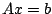
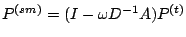
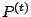
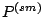
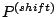

Consider the linear problem . In the first approach, smoothed aggregation with basis function shifting, we begin with the standard smoothed prolongator, , where  is the tentative prolongator. Given a prescribed prolongator sparsity pattern, this method moves basis function support (columns of ) from one aggregate to another to produce a new prolongator, . The shifting is done in such a way that null space interpolation is maintained.
In the second
approach, we consider extensions to building prolongator
operators via energy optimization (Vanek, Mandel, Brezina).
In this method, the sum of the energies of the prolongator
basis functions is minimized, subject to a fixed prolongator
nonzero pattern and interpolation of low-energy modes. We
consider modifications such as filtering  to account for
anisotropies and applying a modified CG method to solve the
optimization problem.
to account for
anisotropies and applying a modified CG method to solve the
optimization problem.
We present numerical experiments that compare the two methods to traditional smoothed aggregation on a variety of model problems.